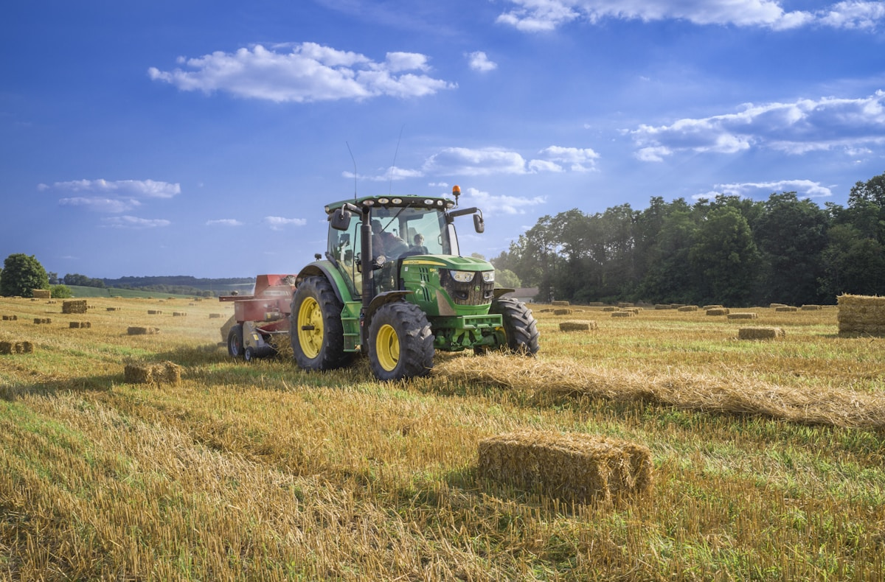

THE PEOPLE BEHIND YOUR FOOD
From their corner of Bangladesh.
Three generations of the Rahman family grow leafy greens in Savar, Dhaka. Their profile brings together the place and produce behind the family farm.

Savar · Dhaka
Good food starts here.Illustrative stock portrait · Shariar Kabir / Unsplash
THE PEOPLE BEHIND YOUR FOOD
Three generations of the Rahman family grow leafy greens in Savar, Dhaka. Their profile brings together the place and produce behind the family farm.
EXPLORE THE CATALOG
Selected by produce type. Sales rankings and supply from this farmer are not yet verified.
Browse all products ↗